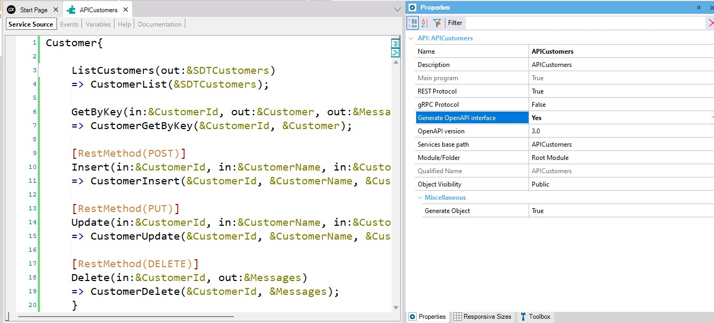

Calling rest API Using Postman app
This article describes how to call a Rest API using a client application; in this case: Postman.
First, set the API object Generate OpenAPI interface property to Yes and save.

After that, select Build All/Rebuild All.
Next, run the API object and download the YAML definition file: http://server/BaseUrl/APIObjectName.yaml.
.NET: http://localhost/APIObjectExampleFromScratch.NETFrameworkEnvironment/APICustomers.yaml
Java: http://localhost:8080/APIObjectExampleFromScratchJavaEnvironment/static/APICustomers.yaml
Below you can see all the steps being executed:

You have to import de YAML file in Postman.
Finally, you can test all the services:
| Backlinks | |
| Toc:First Steps with API Objects | Prototyping an API with Swagger |